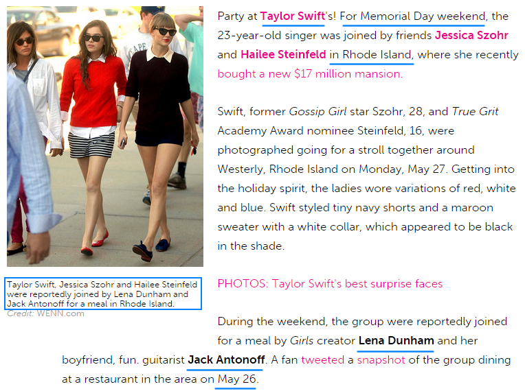

2. Months of Back and Forth
5月26-27两天，Memorial Day（阵亡将士纪念日）的周末，TS和Hailee Steinfeld、Jessica Szohr、Lena Dunham还有Jack Antonoff一起在她罗德岛的豪宅中聚会。
就在这天，TS和Jack谈起John Hughes的电影，并在音乐方面一拍即合，TS向Jack提出合作邀请，他们合写的第一首歌就是I Wish You Would。
（1989每一首歌写作时间的解释和证明在Chapter 3 – 1989中，Chapter 1中不展开说明）
他们随后还陆续合作了Sweet Than Fiction（收录在< One Chance >电影原声带中）、Out of the Woods、You Are in Love。
在1989 track by track中，TS描述I Wish You Would写作背景是：
"I think for this song, we wanted to create sort of a John Hughes movie visual with pining and, you know, one person's over here and misses the other person, but is too prideful and won't say it. Meanwhile, this other person is here and missing the same person. They're missing each other, but they're not saying it, and I had this happen in my life."
“在这首歌里，我们想制造出一种John Hughes的电影画面，思念交缠的那种，一个人在这里想着另一个人，但是却因为自尊心不肯承认，同时那个人也在想着对方，她们相互思念，却不肯开口。这样的事我就经历过。”
He drove past her street each night —— < I Wish You Would >
那个人在2013年5月夜夜开车经过她家
那天也在场的Jessica Szohr是DA的BFF，她出现在那里也许是当中间人。
2013年骂TS的人很多，别看她现在是女权代表人物，在2013年连女权主义者都在骂她。
6月15号， Tavi Gevinson写了一篇文力挺TS，图1、图2，链接1，链接2，TS在推上转发了，DA随后就关注了Tavi Gevinson。
{kind=link}
{kind=link}
6月6号，六单Everything Has Changed的MV在Vevo上线。
6月24号，EHC在英国发行。
6月25号，身处英国的DA在Vine上发了一个视频，在本子上写了一句话
Hello, is it me you're looking for?
这是Lionel Richie的经典歌曲< Hello >中的一句歌词，Glee剧中唱过，16年格莱美为Lionel Richie致敬的环节也唱过，有兴趣的可以看下这首歌的MV
歌词讲的是一个人在心里默默的关注着、爱着另一个人，却一直徘徊没有开口，最终决定表白。在MV的最后Lionel Richie握住女主角的手对她表白：Hello, is it me you're looking for?
点击显示完整歌词
I've been alone with you inside my mind
在我的脑海中一直只有你
And in my dreams I've kissed your lips a thousand times
在梦中我已千百次的吻过你
I sometimes see you pass outside my door
我有时看见你从我门前经过
Hello, is it me you're looking for?
嘿，你找寻的人是否是我？
I can see it in your eyes
我能看出你眼眸中有我
I can see it in your smile
我能看出你微笑中有我
You're all I've ever wanted, and my arms are open wide
你就是我渴望的全部 我的怀抱为你敞开
Cause you know just what to say
你知道该说什么
And you know just what to do
你也知道该做什么
And I want to tell you so much, I love you ...
而我是多么想告诉你，我真的爱你……
I long to see the sunlight in your hair
我渴望看到阳光照进你的秀发
And tell you time and time again how much I care
并一遍遍的告诉你我多在乎你
Sometimes I feel my heart will overflow
有时觉得心里的爱快要满溢
Hello, I've just got to let you know
嘿，我一定要让你知道
Cause I wonder where you are
我想知道你在哪
And I wonder what you do
我想知道你在干嘛
Are you somewhere feeling lonely, or is someone loving you?
你是否觉得孤单，还是已经有人爱着你
Tell me how to win your heart
告诉我怎样才能赢得你的心
For I haven't got a clue
因为我还毫无头绪
But let me start by saying, I love you ...
那就让我从一句“我爱你”开始吧
另外顺便看到几句觉得很眼熟，不代表什么，单纯列出参考
And in my dreams I've kissed your lips a thousand times
He only saw her in his dreams —— < Widest dreams >
I sometimes see you pass outside my door
He drove past her street each night —— < I Wish You Would >
You're all I've ever wanted, and my arms are open wide
You were all I wanted but not like this —— < All You Had to do Was Stay >
7月2-4号，Ashley、Claire、Tavi、RED团队的全部伴舞伴唱以及他们的朋友们在TS罗德岛豪宅过国庆节，图1，图2。
{kind=link}
{kind=link}
7月17号，DA的朋友证实她在LA买了房子（以前的房子是租的），几周后他和DA的弟弟就要帮她搬进新家。
{kind=link}
8月20号，DA申请电影< The Giver >中的一个角色。
{kind=link}
如果有看过The Giver的就知道，这个电影中女性角色就4个，女主是刚中学毕业的学生，从最后选中的演员是97年出生来看这个角色是不可能给DA的，剩下的角色里，首席长老和男主的妈妈这2角色她也不会去申请，她可能申请的就只有一个，上一任的赐予者Rosemary。
8月29号，DA的新男友Nick Mathers出现。
在Swiftgron期间，DA有3个男友：
第1个Henry Joost，导演/制片人， 2012年5月底-7月底，公开亮相3次，十分寡淡，站一起脸上就像写着3个字：不太熟；
第2个Christian Cooke，演员， 2012年11中旬-2013年6月底（有说只到4月的，但是6月份他们还一起露过面），时间长，但公开亮相只4次，大部分时间分开2地，看着关系挺熟，更像是演员圈内朋友；
第3个Nick Mathers，澳大利亚餐饮业商人， 2013年8月底-2014年1月，13年10月底之后再未出现，公开亮相8次，还有kiss。
我的个人观点：前两个是PR，第3个我不确定，即使不是PR，即使DA真的和Nick Mathers在一起，她也不是真心的或者不是认真的，并且这个人的出现对Swiftgron有影响。
9月3号，DA和Nick Mathers白天在NY牵手逛街，然后一起坐飞机回LA。
9月4号，TS邀DA一起去看Fun concert，就是Jack Antonoff所在的Fun乐队，同行的还有Sarah Hyland和她男友Matt Prokop，相当于一个double date night。第2天，TS和DA都发推表示看了这个演唱会，图1，图2，Sarah发了一个Vine短视频。
{kind=link}
{kind=link}
这是2013年，TS和DA第一次、最后一次、唯一一次一起出现在公开场合，自从12年12月Emma Stone生日宴之后她们就没再公开露面，4月前还看得到暗地联系（比如格莱美、情人节），4月swiftgron曝光后连联系都几乎看不见了，为何到了9月突然决定一起出现在公开场合。我想到的第一个可能，11年9月4号是她们正式认识的日子，13年的这一天是两周年；第二个可能，TS对DA身边出现的新男友有危机感了， 趁着巡演间隙不管是公开还是私下找个名目约出来再说。
但从当天拍到的视频和照片上看，她们的情绪都不高，话说第2张图，Dianna你的左手在哪？
{kind=link}
{kind=link}
9月5号，TS和Hailee一起逛街，DA和Nick Mathers一起吃饭。
9月10号，DA上一年出国拍摄3个月的电影The Family上映，DA和Nick Mathers手牵手出席首映式，那几天DA天天都在推特上宣传这部电影，TS没有任何表示。
9月12号，DA和Nick Mathers一起离开LA机场。
9月27号，< The Giver >剧组公布最后一个角色人选，DA曾经申请的角色Rosemary最后给了TS。
Taylor Swift is the latest addition to the cast of Phil Noyce's "The Giver".
导演会选择TS可以理解，这部片子有内涵，有Meryl Streep这样的老戏骨坐镇，他们还需要一个有市场号召力的人，这个会弹钢琴戏份又很少的角色给TS再合适不过了。
我的看法是，这个角色不是TS主动去抢的，客串电影对她来说是锦上添花不是必须，她正在繁忙的巡演中，她和DA已经有矛盾，除非她是打算分手否则不会主动去抢DA申请的角色。可能就是导演看中了TS的号召力，联系她的经纪人，大家觉得这事对双方都有好处就接下了。
但从结果上看，不管有意无意，抢了就是抢了。
尤其在2013年，DA事业受阻，她15年对ELLE说：
"27 was a really hard transitional year. I lost a friend. Work was slow. All those things they say about heading into your later 20s all rang true."
“27岁那年（2013.4-2014.4）真是艰难转折的一年，我失去了一个朋友（指去世的Cory Monteith），事业进展缓慢，人们说的在步入二十岁后期会遇到的困难我全遇到了。”
在这样的情况下，DA心里不介意是不可能的吧。
10月5号，DA和Nick Mathers一起看在LA举行的第四届马球精英赛，有公开Kiss。
这两年间，相比TS每次PR都要上演kiss和去酒店的恶俗不文明戏码，DA前两次都只是牵手，很注意尺度。但是这次有kiss，这是她真看上了新男友还是故意气TS的就不知道了。
10月19-22号，TS去南非拍摄< The Giver >中为数不多的镜头。
10月23号，DA和Nick Mathers一起参加2013 WHITNEY GALA。
接下来Nick Mathers再没出现过。
但是，已经晚了。
WE ARE NEVER OUT OF THE WOODS
BECAUSE WE ARE ALWAYS GOING TO BE FIGHTING FOR SOMETHING